现在的人们总是习惯于在计算器键盘上敲几下就获得答案，而不再尝试那些磨人的计算；只要我们知道如何求解问题，代数计算就都留给了计算器。计算器其实发明已久，在这一节我们将从一位帮助父亲解决难题的法国青年谈起。
计算机是何时发明的呢？它与计算器有何关联？下面为你一一介绍。早期有一种依靠发条装置运转的计算器——我们稍后再来了解它，而现在遍及我们生活方方面面的电子计算机是在20世纪40年代组装起来的。但其实第一批计算机出现得远早于此。“computer”（计算机）一词产生于1613年，远远早于电子计算机或发条带动的机械计算器，这些计算机的出现是为了应对计算难度和强度的增加。而第一批“计算机”应该是人类计算员，后续的计算机只是按照人类手写的或算盘给出的方法进行更加复杂的代数计算。
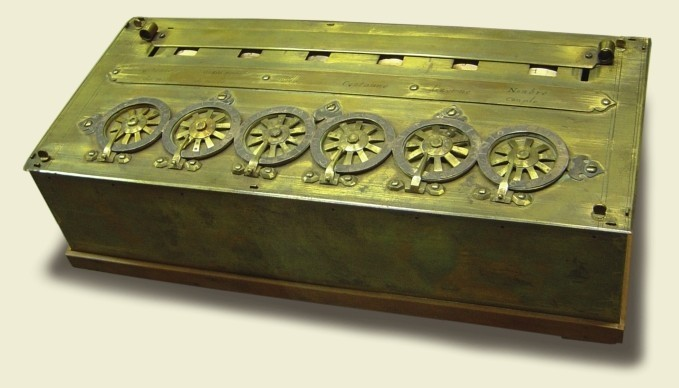
帕斯卡计算器可以处理六位数运算，只要旋转顶端的金属轮就能输入数据。
帕斯卡计算器
17世纪40年代，有一个叫布莱兹·帕斯卡的法国年轻人，开始协助自己在法国北部城市税务部门当计算员的父亲。虽然还是一个十几岁的年轻小伙，帕斯卡却致力于发明一台可以快速运算的机器。他最终制造了一台机械计算器，即广为流传的帕斯卡计算器。第一台是1642年制成的，之后帕斯卡对其进行了多次修改完善，经历50多种版本的改进后， 1645年得到了自己满意的计算器，而那时，他只有22岁！总共有20多台帕斯卡计算器面世，其中有9台流传至今。至此，税务人员、会计师和学生开始使用计算器和数据表，而第一批收银机也在类似系统的基础上被发明了出来。
帕斯卡三角（杨辉三角）
布莱兹·帕斯卡另一项杰出的成就是帕斯卡三角。这个三角中，每个数是它上方两个数之和。（如果上方缺一个数，则看作这个位置的数为0。）帕斯卡用这个三角求解复杂的方程，不过这个三角的妙处不仅限于此。左腰往里第二斜列上的数（图中黄色块）恰为所有的自然数（不包括0），第三斜列（图中蓝色块）恰为三角形数，即摆出二维三角形所需要的点数。另外，每行所有数之和恰为2的幂：1，2，4，8，16，等等。
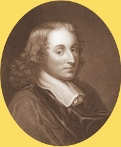
帕斯卡三角并不是由帕斯卡发明的，它源于约公元前200年的印度。
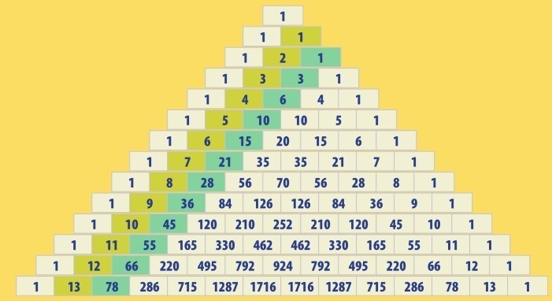
帕斯卡三角的前5行恰为11的方幂，如110=1， 111=11，112=121，等等。
计算器的用户界面
帕斯卡计算器可以用于加法和减法运算。乘法运算则需要做多次加法运算来实现。通过旋转顶部的金属轮，数字被输入计算器。它们依靠发条齿轮与绘有数字的轮子连接。被选中的数字会从机器顶端运行的小窗口中显露出来，每个窗口一个数字，对应一个数位的取值：个、十、百，等等。第一个数成功存入后，人们可以旋转轮子加入第二个数，窗口中就会显示出两个数之和。一个开关系统能把计算器转化为减法机器。而机器内置的发条装置可以把数字从一列移到另一列。帕斯卡为几台计算器设置了不同的进位制，有十进制的，有六进制的，也有十二进制和二十进制的。这样便于处理旧的法国货币系统（因为它不用十进制），也便于用旧的测量系统计算距离和面积。
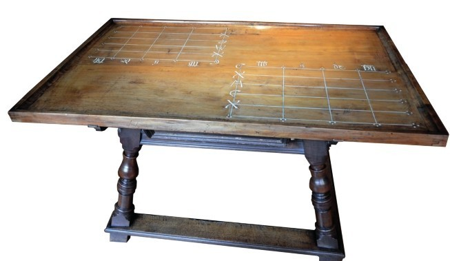
如左图这样的算桌在中世纪的欧洲是常见的数学工具。
下图中商人正是在用算桌计算货物价格。
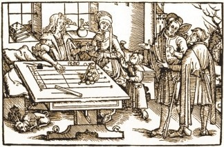
新型计算器
许多数学家和工程师都致力于改进帕斯卡计算器。1671年，戈特弗里德·莱布尼茨（见第130页）制造了一个能直接计算乘法的机器。但是，所有这些计算器都不结实且价格昂贵。工业革命时期，经历了数次制造技术的革新，机械计算器才慢慢发展成为结实耐用又价格适中的产品，受大众欢迎，而不只是为数很少几位专家的独享。最早普及开的是名为Arithmometre的四则计算器，1820年发明于法国。
旧的系统
在四则计算器发明之前，计算员和数学家们只能用传统的方法计算。他们绝大多数时间运用算盘或算桌帮忙计算，这两者结构设计有所不同，但工作原理是一致的。算盘是最古老、使用年限最久远的计算工具之一。现代的算盘上有算珠，能在短棍上上下移动（见第21页）。还有另外一种，算珠只是摆放在地上，或者放在标有纵列的特制桌子上。用算盘或算桌进行加法或减法运算相对于笔算容易很多，也便于计算大数的加减，甚至一些专家可以用它们做乘除和开方运算。算盘一直沿用至今，即使与电子计算器相比，一些顶级的珠算家亦能更快获得答案！
新的环球纽带
生活在美洲中部的前人，如奥尔梅克人、玛雅人和阿兹特克人，自创了一种称为nepohualtzintzin的计算器，这个名字的意思是“智慧的计数器”。这个计数器实行二十进制，是用晒干的玉米粒串在绳上或细棍上制成的。现代人称这个机器为Aztec计算器，它为最早的美洲文明——奥尔梅克文明，可能来自3500年前的中国移民一说提供了部分佐证。
第一位程序员
阿达·金，勒芙蕾丝伯爵夫人——更多人称她为阿达·勒芙蕾丝——是英国诗人和冒险家拜伦的女儿。阿达的母亲教导她科学与数学，希望她不要遗传拜伦家族的性格。这种教育最终奏效了，阿达成了史上第一位计算机程序员。在19世纪40年代，她为机械计算器设计程序和拟定算法，这项工作遥遥领先于同时代思想一个世纪之久。
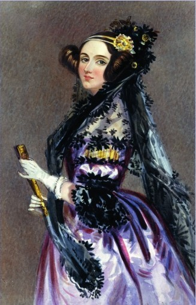
1979年，一款美国军用计算机编程语言被命名为Ada，以纪念阿达·勒芙蕾丝。
一个新思路
帕斯卡和莱布尼茨都因为计算器制造之外的杰出贡献为世人敬仰。帕斯卡观测了空气气压，并证明即使是空气也是有质量的。他还和同胞皮埃尔·德·费马最早建立了概率理论。莱布尼茨是微积分理论的创始人之一，微积分是研究持续变换现象的一种数学方法。另一个创新者把机械计算器发展成我们现在意义上的计算机，这个人是英国数学家查尔斯·巴贝奇，他设计了史上最复杂的机械装置。
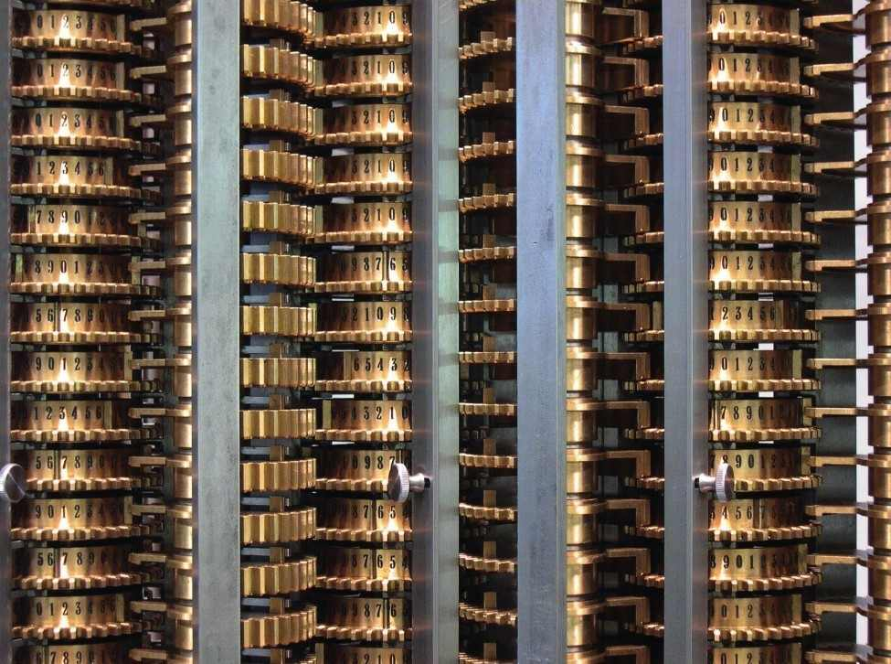
差分机大概有25 000个活动配件，能计算16字节的数字。
可编程的机器
计算机由强大的计算器演变而来，而现代计算机已远远不再只是一个计数器。计算机是在运行一种算法或一长串数学命令。这可以理解为一个程序，而且计算机运行的方式是建立在数学理论基础上的（见第172页：信息论）。然而，第一台可程序化的机器不是算术机器，而是一台编织机，它于19世纪早期由法国人约瑟夫·贾卡发明。机械编织机在那个时候其实已经存在，其纺织速度比手工操作快捷，但是没有记忆不同色彩纱线编织的图案纹路的功能。贾卡发明了一种方法，把图案编译成卡片上的一组孔，这些孔生成的图案能够被机器解读出来。（直到20世纪50年代，这种穿孔卡片仍被用作计算机编程的一种工具。）贾卡的编织机其实还不能算作一台计算机，但是，它确实激发了查尔斯·巴贝奇去研发一台可编程的计算机。
IBM的诞生
1880年的美国人口普查为政府提出了一个难题：处理完所有的人口数据需要大概10年的时间。而下一次，即1890年的数据，处理完会需要更长的时间。于是，美国政府购买了赫尔曼·何乐礼博士发明的制表机，这是一种电动计数机器，利用穿孔卡片程序设计。有了制表机，原来预计10年完成的工作6周就结束了！多年之后，何乐礼的公司发展成了现在家喻户晓的IBM公司。
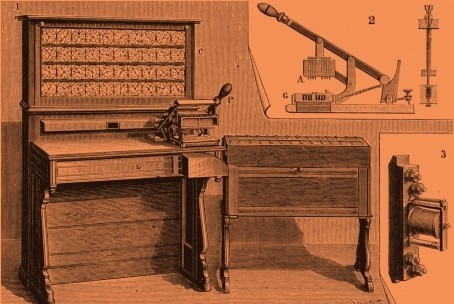
制表机由一块巨大的电池驱动（图中右下角）。人口普查数据通过一张穿孔卡片输入机器中，然后拉动杠杆，一张包含计算结果的新穿孔卡片就制作好了。
差分机
1822年，巴贝奇研制出一台计算机雏形，用以测验一台更为强大的机器的机械性能，后者被巴贝奇称为差分机。这台机器由一大堆发动机齿轮带动处理数学数据。但是，巴贝奇无法负担制造整台机器所需要的精确加工部件的费用。（1992年，一台完整的差分机在伦敦科学博物馆制造完成。）
分析机
差分机是手动操作的，使用者转动机器侧边的手柄启动机器进行计算。19世纪40年代，巴贝奇发明了一台更为复杂的机器，起名为分析机——机器由一台蒸汽发动机带动！分析机是另一种数学运算机器，但它被认为是第一台真正意义上的计算机，因为它既能编程，也有记忆功能。然而，巴贝奇再一次因无法负担制造整台机器的费用，只做了个演示样机，遗留至今。虽然没有成型，但是许多人至此意识到了巴贝奇发明的重要性，其中之一是阿达·勒芙蕾丝，英国诗人拜伦的女儿。19世纪40年代，巴贝奇发明分析机后，阿达开始协助巴贝奇的工作。巴贝奇倾心于分析机的设计，以及筹集资金制造真机，而阿达·勒芙蕾丝此时可能先于巴贝奇本人，已经发现分析机的所有潜在优势。她指出，巴贝奇发明的机器以及后续出现的类似机器，都能够计算伯努利数。伯努利数在数学上极其重要，却难于算出。因为巴贝奇的机器并没有真正制造出来，所以阿达·勒芙蕾丝的说法并没有得到检验。但是，她的相关技术，在一篇标题为《笔记》的文稿中简单标记为“G”，这个注释G现在被看作历史上第一套计算机程序。而她这篇简短笔记的重要性直到1953年公布后才被世人认可，此时距她去世已经过去了一个世纪之久。
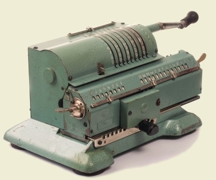
早期的现代化计算器是手动操作的。
人类计算员
历史上有不少“白痴天才”的故事，他们普遍智能低下，却有着非凡的技能，如能进行不可思议的复杂心算。其中一位为人们熟知的天才叫杰迪戴亚·巴克斯顿，他生活在18世纪的英国。据说巴克斯顿不会读写，知识面也很窄。他没有上过正规的数学课，但是他能把看见的任何事物都数字化。他去为一个地主丈量田地面积，不用任何工具而光靠在田地中行走就得到了以平方英寸为单位的结果。他还能把田地分割成毛发宽度（1英寸的1/48， 1英寸=2.54厘米）。巴克斯顿能处理数百位的数字，并且他还自己发明了一些数字，如“tribe”（部落）表示100万的立方，即1018，以及“cramp”（抽筋）表示1000个“tribesoftribes”，即1039。
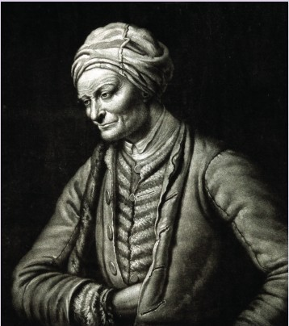
真正的计算机
到了20世纪50年代，计算机革命如火如荼。再早20年，英国数学家艾伦·图灵曾经描述过一台能解决一系列数学问题的虚拟机器。这台“图灵机”由一个算法或数学运算控制运行。机器一次能读懂一部分算法，然后按这部分算法的要求处理数据。这其实是对数字计算机的最初描述，但是因为它需要无限存储功能，当时的人们无法制造这样的一台机器。到了20世纪40年代，美国数学家约翰·冯·诺依曼发明了一套电子开关系统，运行起来类似于图灵机：第一台数字计算机终于诞生了！
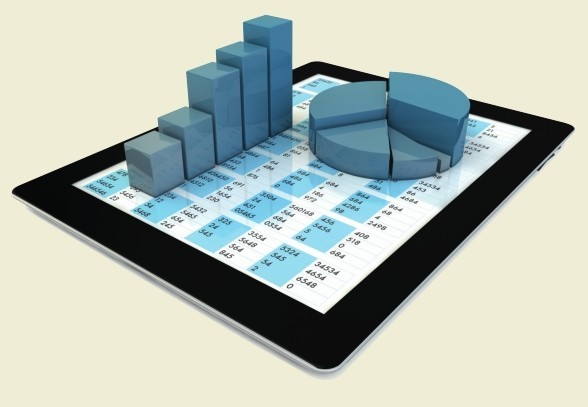
今时今日，计算器只是计算机、平板电脑或智能手机上的一个应用程序。
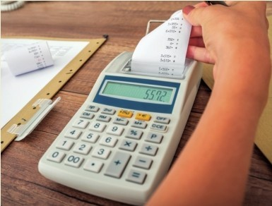
早期计算机式的计算器的记忆功能不强，但是能把计算结果打印在纸上输出。
参见：
▶二进制与其他进制，第130页
▶信息论，第172页